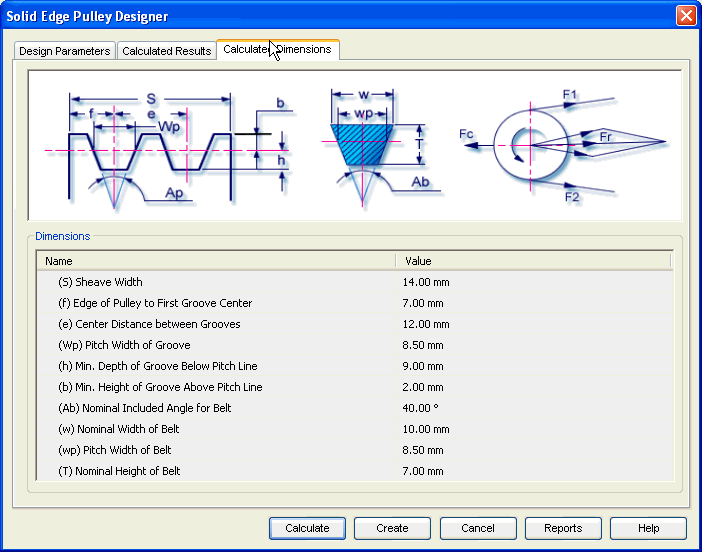

Pulley Calculated Dimensions tab
The Calculated Dimensions tab provides the options you use to view additional results of calculations. These results define the parameters to construct the geometry of belt and pulleys. Hence these are used to build 3D model of pulleys' set.
